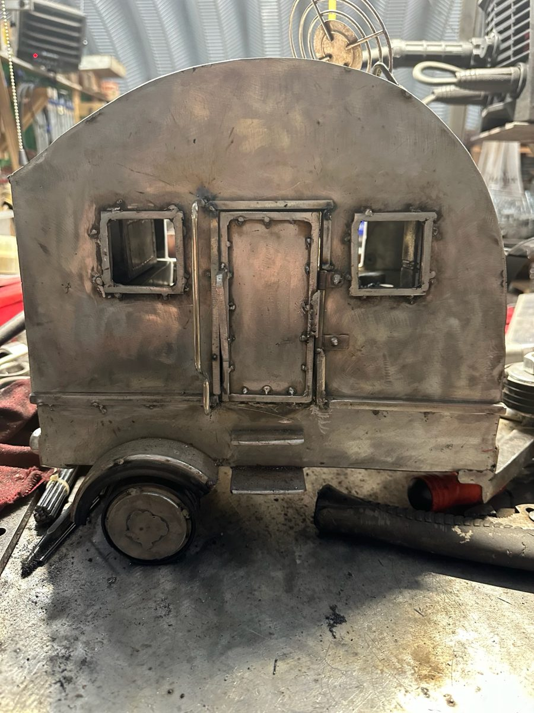
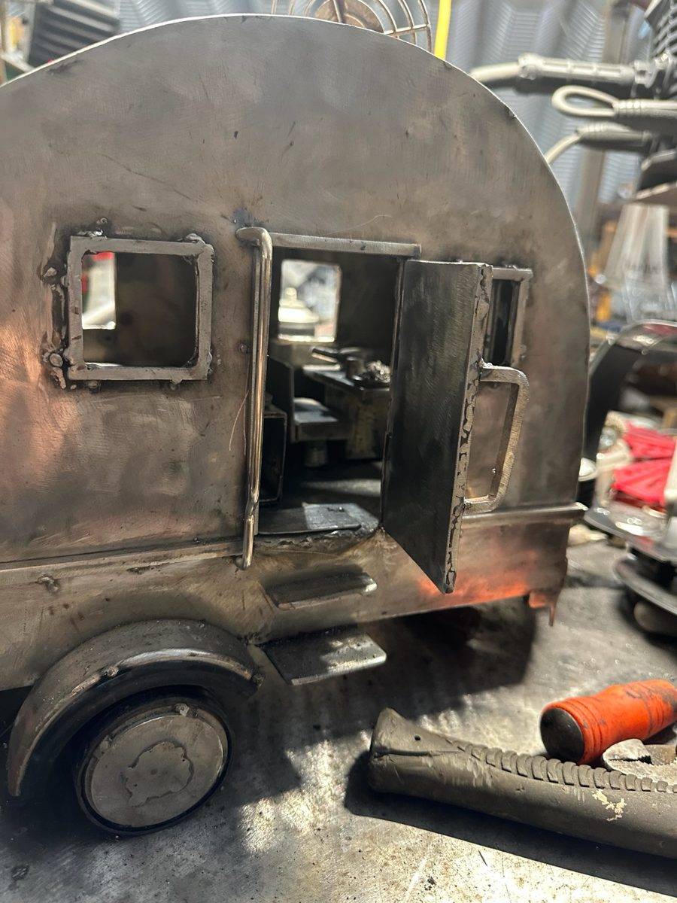
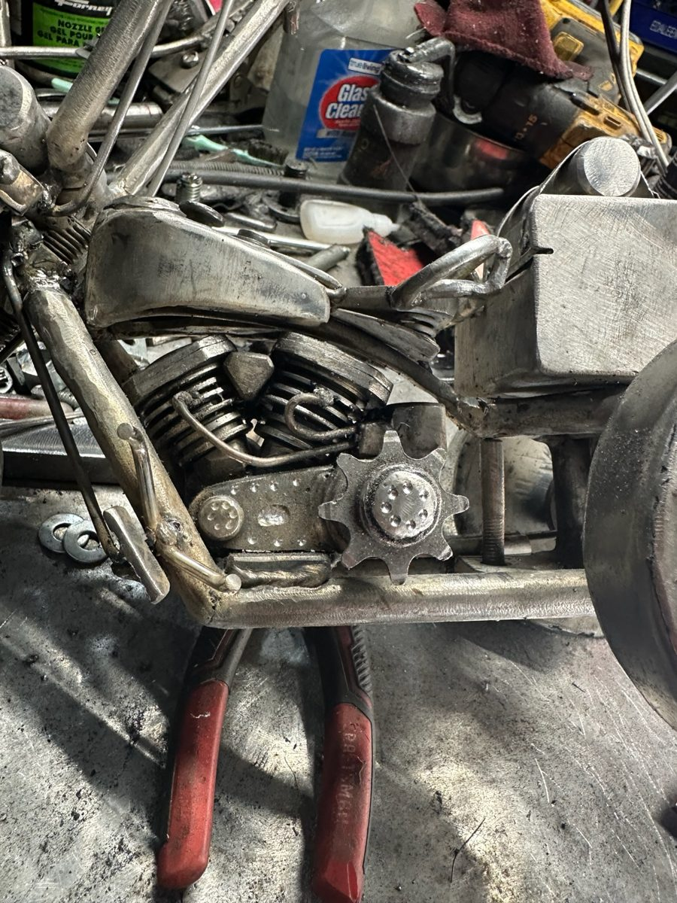
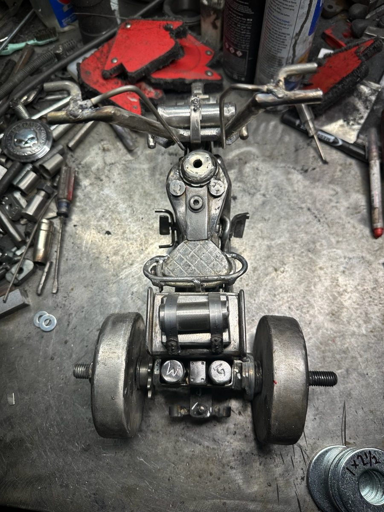
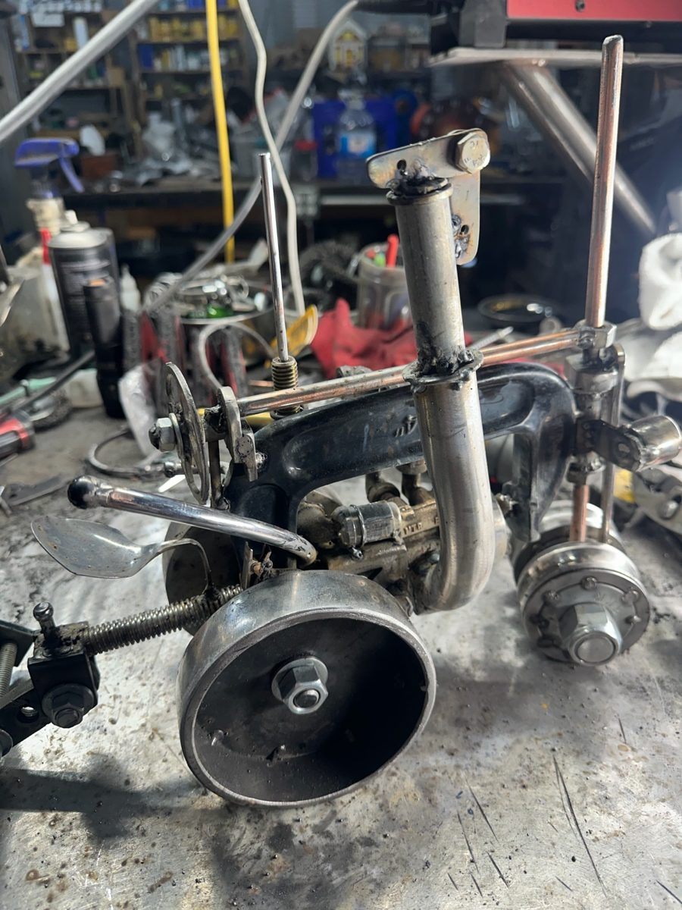
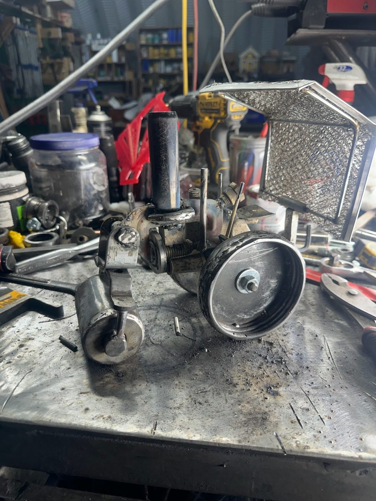
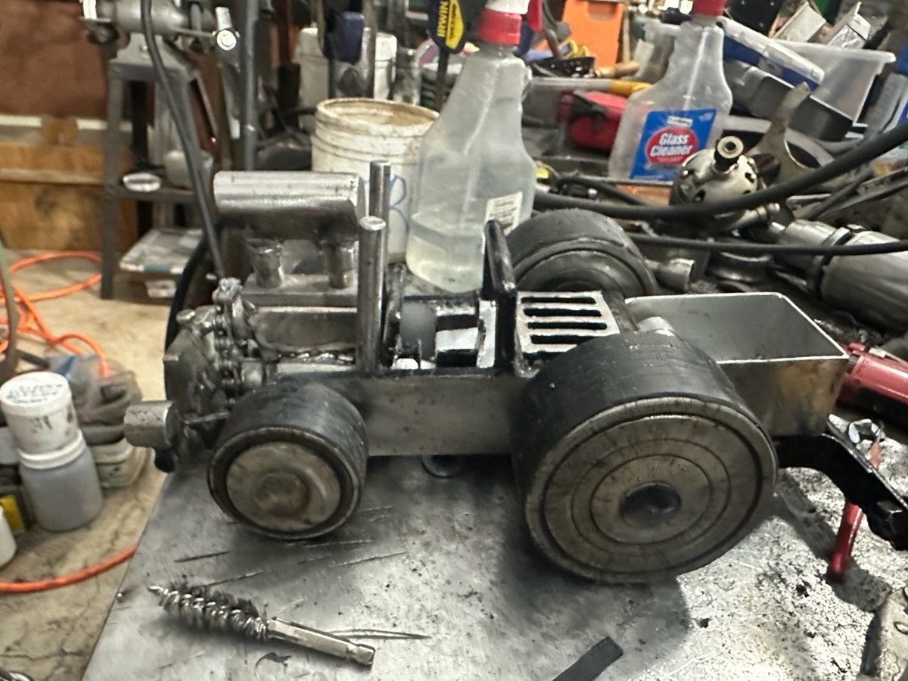

Metal Camper Trailer
All metal, down to the rivets and door handle — and the door opens onto a whole tiny finished interior.


Camper — Front
Windows, door, step, and wheel, all worked in metal.


Camper — Door Open
Inside: a little table, a stove, and room to sit. The details keep going.
Motorcycle Trike
A full trike built from scrap, photographed from three sides so you can see how much is going on.

Trike — Side
V-twin engine, springer front end, solid rear wheels.


Trike — Engine Detail
Cooling fins, sprocket, and chain, all figured out by hand.


Trike — Top View
Tank, diamond-stitched seat, and handlebars, from above.
Scrap Tractors
Ken keeps coming back to tractors — each one built around different salvaged machine parts, so no two are alike.


Tractor — Salvaged Parts
Built around an old machine body — even a spoon finds a second job.


Tractor — Mesh Canopy
Tall stack, mesh canopy, and big rear wheels.


Tractor — Big Wheels
Heavy rear wheels, a front loader, and a dump bed in back.
On the Workbench
Where it all happens — several pieces together on Ken's bench, with a piston-headed figure keeping watch.

The Bench
Trike, tractors, and more, right where they're made.
See a piece you like? Every one is one of a kind — here's how to reach Ken before it's gone.